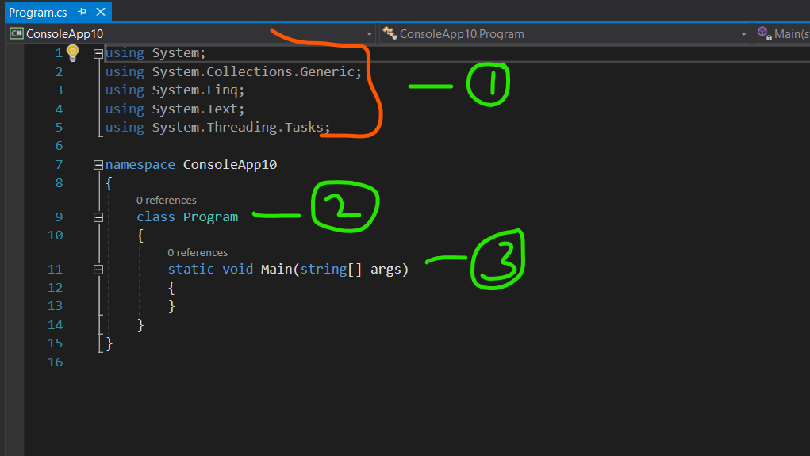

Basic Syntax
In previous example we learnt, how to download Visual studio and how to create our first project
In this lesson, we will walk through basic syntax of C# and how to use them on every project we do going forword
Hello world Programm

1. Namespaces:
Namespaces are used to organize code and prevent naming conflicts. They group related classes, structures, interfaces,
enums, and delegates. The using directive is used to include a namespace in your code.
2. Class Declaration:
A class is a blueprint for creating objects. The class keyword is used to declare a class.
3. Main Method:
The Main method is the entry point of a C# console application. It is where the program starts executing.